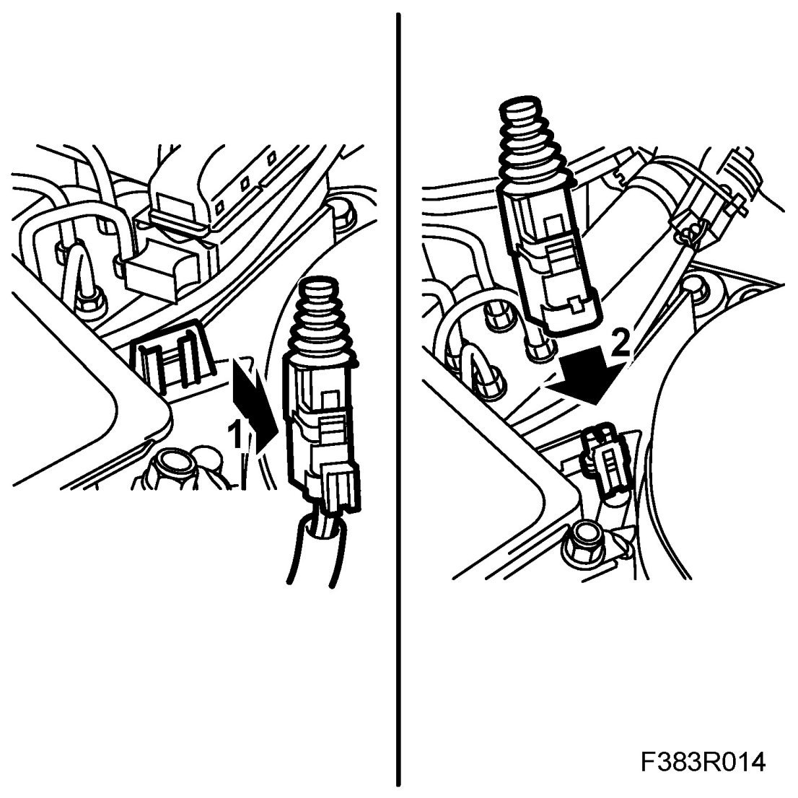
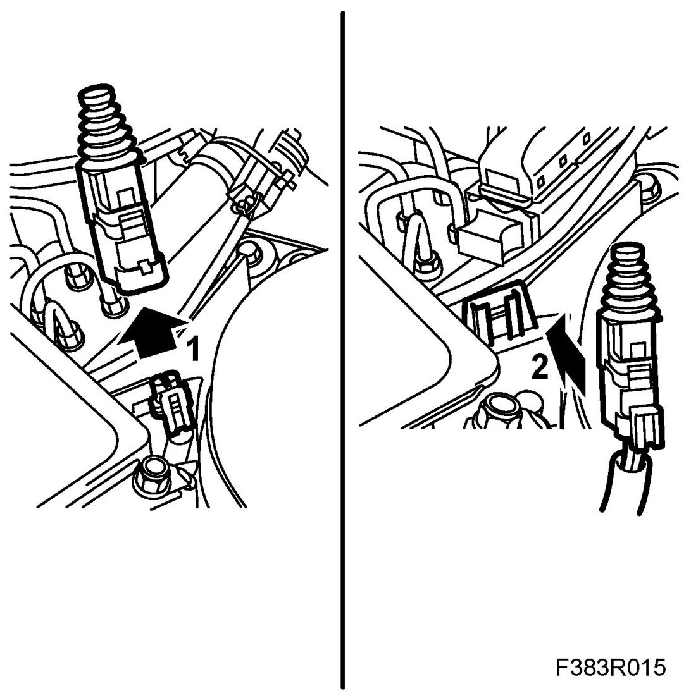

Hood Switch / Sensor: Service and Repair
Bonnet Switch
To remove
1. Remove the bonnet switch by undoing it from its mounting.

2. Unplug the connector.
To fit
1. Plug in the connector.

2. Fit the bonnet switch to its mounting.